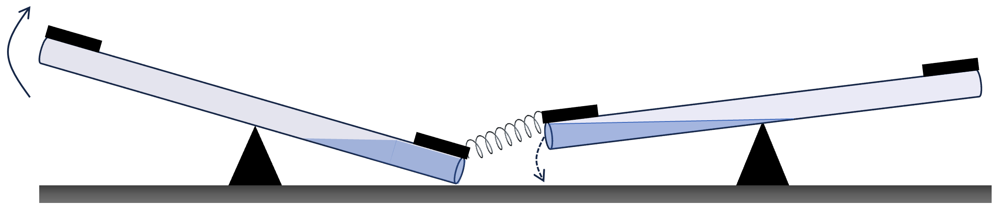
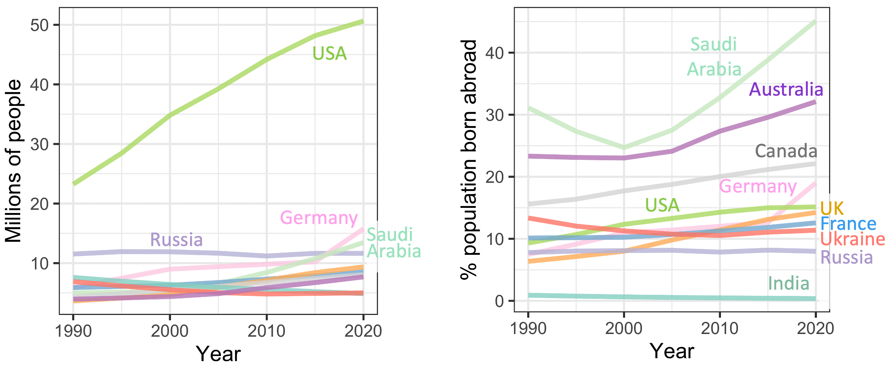
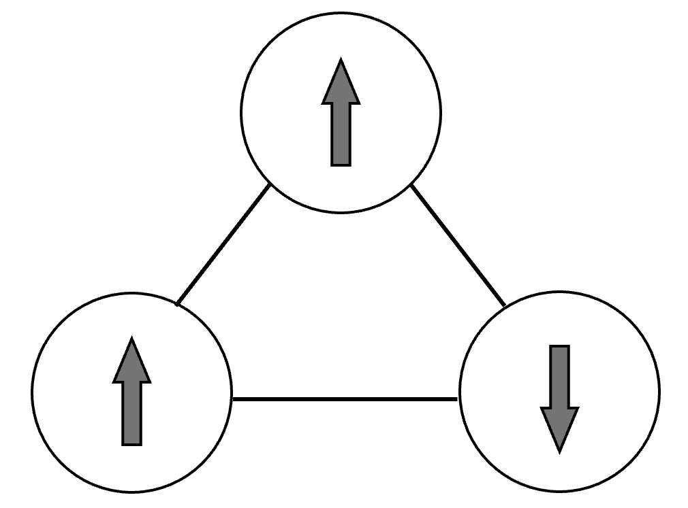

11 Epilogue
In case, like me, you tend to read the first and last chapters before reading the whole book, Box 11.1 summarizes key points in the in-between chapters.
Box 11.1. TL;DR
Polarization is defined as growing apart, which implies increasing inequality.
Polarization is best understood through the lens of systems theory.
A system is any collection of interacting parts that perform a distinct function.
Human families, businesses, sports teams, countries, etc. are systems whose behavior is modulated by humans. I call these systems Human Systems.
Positive (aka change-reinforcing or self-reinforcing) feedback loops amplify changes within systems, and differences among them. Positive feedback loops drive all forms of polarization.
Polarization can happen to any measurable quantity, e.g. the distribution of people’s weights.
-
Human Systems are different from natural and engineered systems in two important ways:
Their properties are not constrained by design or physical limits. Where such limitations arise, we find ways around them.
They evolve rapidly in response to our actions. Our actions modify Human Systems, and our interactions within Human Systems modify our behaviors.
The unbounded way in which the properties of Human Systems can evolve, enables ever increasing relative inequalities within and across communities, a form of polarization I call Runaway Polarization (RAP).
RAP arises when the strength of a positive feedback loop increases as polarization increases.
A common driver of RAP is when systems that are subject to positive feedback compete with each other for limited resources.
Feedback loops occur commonly in all complex systems. So, we can expect RAP to arise frequently in Human Systems. Available data confirms this expectation.
Cooperation through sharing of rewards is a form of positive feedback.
Cooperation arises automatically as the most optimal strategy if group members interact with each other repeatedly, remember each other’s past actions, and act accordingly.
As group sizes increase, it becomes harder for members to know and trust each other, and cooperation becomes less rewarding. Formal laws, social norms, and reputations (collective memory) can help allow cooperative group sizes to grow, but within limits.
In human systems, RAP arises whenever cooperation fails and the resulting two or more communities end up competing for limited resources.
Through analysis of thousands of cases, Elinor Ostrom and her collaborators identified conditions in which cooperation can prosper. Subsequent research shows non-cooperative societies can be flipped into cooperative ones given a small core of committed activists.
Polarization is common in nature. In healthy biological systems, the extent of polarization is limited. In cancer and Human Systems, polarization can increase until the system collapses.
Cancer exemplifies how RAP provides short-term benefits to the few. Left untreated, cancer destroys both itself and its host. Similarly, with RAP, everybody loses in the long-term.
RAP creates uneven playing fields that drive increasing polarization. Moving against the force of polarization is akin to climbing uphill or swimming upstream.
RAP creates highly segregated communities that increasingly misunderstand, mistrust, and oppose each other, leading to increasingly destructive confrontations.
Where RAP creates winners and losers (e.g. wealth, education), losers will see the uneven playing field as a system that is rigged against them, seeding social upheaval.
In situations where RAP creates opposing identities (e.g. politics, religion), each “tribe” increasingly sees the other(s) as “beyond saving”, ultimately leading to violent upheavals.
The only long-term solution to RAP is to counter the positive feedback loops that drive it. Countering symbolic figureheads or the downstream effects of RAP will only provide temporary relief unless we also counter the driving feedback loops.
Because RAP gets much worse over time, we need to counter it at the earliest possible time.
A large number of technical and psycho-social resources are available to help us identify and counteract RAP. RAP can be reversed, but avoiding RAP requires ongoing action.
The process of runaway polarization is analogous to cancer. Like cancer, RAP is inevitable in Human Systems. And also like cancer, RAP is almost always detrimental to the societies that it takes hold in. However, unlike cancer, we already know how to cure RAP.
By “curing RAP” I don’t mean that we can, or would want to, get rid of all polarization. As we have seen, constrained and bounded polarization is a natural, often useful, and very common phenomenon. It is only unbounded, runaway polarization that is cancer-like. This is an important realization. It means that countering RAP should focus on the runaway aspects of polarization. Countering RAP is then simply a move towards a less unequal society, greater social mobility, and more nuanced consideration of alternative perspectives.
According Forbes, the median total wealth of the richest age-group in America in 2024 (70-74 year olds) was about $400,000 123, which is about a million times less than Forbes’ estimate of Elon Musk’s net worth. Getting rid of economic RAP wouldn’t make a pauper of Musk. If it made Musk 1000 times poorer, he would still be comfortably rich. I used money as an example here because it is easy to quantify. But the same argument holds for all other dimensions in which RAP occurs.
11.1 Some Special Challenges Ahead
RAP can develop along a great many dimensions. Naming them all would make for a very long list, so I have instead sprinkled examples throughout the book. The principles I have discussed apply to all forms of RAP. But a few dimensions of RAP have distinct features that I would like to highlight here.
Racial disparities in the US. The 60 years since the passing of the US Civil Rights Act have amply demonstrated that laws alone cannot banish runaway polarization and inequality along racial and ethnic lines. Generation after generation, racism against the descendants of enslaved people has been compounded by additional burdens such as poverty, segregation, and lack of access to better finance, housing, education, and employment opportunities.
Self-reinforcing positive feedback loops in each of these domains create uneven playing fields that would be challenging to overcome individually. Anti slave-descendent racism in the US poses a uniquely complex challenge because, over the years it has acquired multiple feedback loops that drive it, and these feedback loops have become increasingly coupled to each other. Each feedback loop reinforces, and is reinforced by, itself and all the other feedback loops.
Figure 11.1 provides a visual illustration of feedback-coupling using our earlier example of a water-logged see-saw. Imagine two such see-saws next to each other. But in this case, the two see-saws don’t move independently. They are loosely connected together via a weak spring. To flip the position of one of the see-saws, we have to overcome the weight of the water in both see-saws. Of course, in real life, racism against the descendants of enslaved people doesn’t involve just two such see-saws, but a great many.

Figure 11.1. Illustrative example of coupled positive feedback loops. The movements of two water-logged see-saws are coupled by connecting the two see-saws together using a weak spring. As a result, changing the position of one of the see-saws now entails changing the positions of both (arrows indicate example coupled changes).
As discussed in the previous chapter, to change the state of a network of interconnected components, (e.g. see-saws in the above example), it is usually more effective to introduce many small perturbations across the network, rather than a large change in a single node. In practice, this means running many loosely coupled, concurrent, single-issue campaigns aimed at different parts of society.
It is sometimes argued that the election of Barack Obama to US presidency, and Kamala Harris’s tenure as Vice President, demonstrate that the US has moved beyond racism. However, as the children of immigrants rather than descendants of slaves, Obama and Harris suffered from racism but not the inter-generational effects of the disadvantage-reinforcing feedback loops acting on slave-descendants. If anything, their successes demonstrated the shocking power of RAP.
The already-privileged sometimes argue that on present merit, they are better qualified for educational, career, housing, and other opportunities; and that anything else would ‘unfairly victimize’ them. But accepting these arguments amounts to sustaining the positive feedback loops that reinforce and maintain biases in education, home ownership, earnings potential, job opportunities, policing, incarceration, and so on. Removing these drivers of RAP requires concerted long-term effort. Unfortunately, the short-term nature of politics in modern democracies only rewards symbolic and short-term achievements, which means breakthroughs in this area will probably have to come from a more dedicated, and more long-term effort.
Educational opportunities. Imagine two groups of students. One group has outstanding educational credentials; the other group is made up of struggling students from troubled backgrounds. What percentage of each group would you admit to selective grade-schools, colleges, and graduate schools?
One approach may be to test the candidates at each stage and admit the best performing to the best schools. Supporters of this kind of on-current-merit approach would argue that society as whole will progress most if it invests in its best-qualified candidates most. A rising tide, they say, will lift all boats, including those of the currently disadvantaged. They might add that the fastest way to make progress is by investing most in those currently best qualified to deliver progress. In any case, they say, if we don’t reward the best-qualified with the best opportunities, in-effect, we would be discriminating against them.
An alternative view point is that current-merit is not a good predictor of long-term potential. For example, there may be many children with the talents of US Vice President J.D. Vance, who are struggling because they don’t have the benefit of Vance’s supportive grandmother. Present-merit approaches, they argue, would fail to capitalize on the talents of this group 1. It would also unfairly deny such children the opportunity to escape their troubled backgrounds. In the words of Pope Francis:
… if one does not seek a genuine equality of opportunity, “meritocracy” can easily become a screen that further consolidates the privileges of a few with great power. “ 124
I have simplified the arguments of the above two groups to the extreme 2–4 in order to highlight a key missing factor in the debate. As I hope I have shown in this book, educational attainment is subject to multiple self-reinforcing feedback loops that operate across as well as within generations.
A considerable body of research suggests that – in the absence of redistributive policies 5 – race/ethnicity, gender, and parental education have dramatic effects on children’s education and future earnings 6–10. We also know that housing quality, geographical location, poverty, and everyday social interactions greatly influence children’s educational achievements 11–13. Most importantly, these factors aren’t randomly distributed, one disadvantage leads to another 14,15.
Educational potential is the cumulative result of year-upon-year of experiencing opportunity or disadvantage. Opportunities lead to achievements, which create new opportunities, leading to further achievements, and so on. Disadvantages create spirals in the opposite direction. Runaway inequalities in education will not disappear until we recognize and counteract these self-reinforcing feedback loops at all stages of education.
Religion. Apart from a few notable exceptions such as the Vatican, large-scale human societies tend to host multiple religions whose adherents trade, cooperate, or compete with each other. Polarization of religious attitudes does not happen in isolation. Rather it impacts and is impacted by politics, economics, cultural trends, etc.
Notwithstanding these entanglements, religions offer uniquely fertile grounds for RAP because of the way in which they foster committed activists, insulated communities, and strong social bonds through shared narratives, regular meetings, classes, ceremonies, and social activities. What happens within religious communities is mostly not visible to or experienced by people outside the community. As a result, a distinguishing feature of religious RAP is that its growth can go unnoticed by outsiders.
Ironically, highly polarized fundamentalist religious groups offer some of the most successful examples of Ostrom’s idea of large-scaled, layered, decentralized, and self-managed cooperative communities.
Being layered, decentralized, and self-managed is essential to terrorist fundamentalist organizations such as the Islamic State, as a means of minimizing their vulnerability to infiltration and attack. But many perfectly legal and popular religious groups are also organized along the same principles. As an example, the Christian movement known as the Seven Mountains Mandate (aka 7MM) has a collective leadership structure that brings together tens of thousands of churches in the US, South America, Africa and Europe, and has a 41% approval rating among American Christians 16.
7MM seeks dominion over seven key spheres of society: family, education, government, business, media, arts & entertainment, and religion. As such, 7MM’s activities impact all aspects of life in the US and across the world. The activities and goals of 7MM should be vitally important to all of us. But religious communities tend to be worlds unto themselves, and outsiders’ attempts to understand religious movements often end up increasing polarization instead of understanding 17. At the same time, isolation from the broader community makes movements such as 7MM susceptible to increasing polarization via Group Shift (see Chapter 9), unless we can build bridges among diverse religious and secular communities.
Immigration. In How Migration Works, the Dutch migration expert Hein de Haas uses extensive geographical and longitudinal data to argue that global migration patterns – both legal and illegal – are primarily driven by labor-demand. In contrast, de Hass points out that:
[…] recent surges in refugee numbers as well as asylum applications in Western countries do not reflect a ‘rising tide’ of refugee migration, but a normal and therefore temporary response to increases in conflict levels […], with refugee numbers going down again after the conflicts subside. 18 (page 56)
For an intuitive illustration of the point made by de Haas, Figure 11.2 shows total migration patterns over the past thirty years in the top ten countries with the highest immigration rates. In total numbers, America is the top destination. But relative to population size, migration to the US is far below that of Saudi Arabia, Australia, and Canada, which have strong labor demands.

Figure 11.2. Top ten destinations for international immigration. A. In terms of absolute numbers of immigrants in the country. B. Immigrant numbers as percentage of population for the same countries as in A. 125
In economic terms, migrants satisfy local labor needs efficiently. For example, a study analyzing the 2003 US National Survey of College Graduates concludes that “immigrants who originally entered the United States on temporary work visas or on student/trainee visas outperform native college graduates in wages, patenting, commercializing and licensing patents …”. They are also “more likely than natives to start a successful company…” 19. How the native-born population sees immigrants may have more to do with broader sense of dissatisfaction and disillusionment, as a study by the Berkeley sociologist Arlie Russell Hochschild powerfully captures:
Meanwhile, if men like Bill were being squeezed by automation, outsourcing, and the rising power of multinationals, they were also being squeezed by greater competition from other groups for an ever-scarcer supply of cultural honors.[…] the 1960s and 1970s had opened cultural doors previously closed to blacks and women, even as immigrants and refugees seemed to be sailing past the Statue of Liberty into a diminishing supply of good jobs. And the federal government was helping this happen. 20 (page 143)
Viewed in this way, anti-immigrant feelings are primarily driven by native anger at loss of opportunity and status. But, instead of addressing the underlying issues, politicians from both left and right, in Europe, as well as in America find it convenient to focus on immigration 21. The resulting hostile environment for immigrants may be self-fulfilling. A 2010 study analyzing multi-decade data from 19 “advanced democracies” suggests that migrants make a more positive contribution to the cohesion and social capital of their local communities when the host communities are supportive and economic inequality levels are low 22.
All of the above considerations suggest that immigration is mostly mis-represented, mis-interpreted, or mis-understood. Sadly, I think we need to add another complication to this mix. Globally, the historical mode of interaction among nations has been ruthless competition, wars, and subterfuge. Outside of the European Union and NATO, there is convincing evidence of actual international cooperation only among countries with shared borders 23.
To avoid losing to its competitors, every nation re-invests its growth into more growth as much as possible. The combination of this positive feedback on growth, and competition among nations is a recipe for runaway polarization in terms of the power and wealth of nations., which creates a few “haves” and many “have-nots”, and loaded dice that keep the have-nots on the losing side. If people from the global South feel that the only way to escape poverty is to migrate to richer nations, then we can expect illegal migration to continually increase no matter how ruthlessly rich nations try to keep migrants out.
We are caught in a version of the Tragedy of the Commons. No leader in the rich “Global North” will act in favor of leveling the international playing field. It is not what they are elected to do. But without such action, uncontrolled mass migration is going to continue to grow and force rich nations to take increasingly draconian anti-migration measures.
In a 2015 speech in Nairobi, Kenya 24, US President Barack Obama quoted the popular saying: “We have not inherited this land from our forebears, we have borrowed it from our children.” If we don’t want our children and grandchildren to inherit morally indefensible and nightmarish immigration controls, we need to level the international playing field now.
11.2 (Can’t Get No) Satisfaction
Global warming, ingrained inequalities, wars, pandemic diseases, the list of doomsday scenarios facing us often feels overwhelming. But systems theory suggests that having daunting challenges is actually a constant, fundamental, and unavoidable part of life.
Decades ago, exploring how businesses and nations compete and cooperate with each other, Robert Axelrod and Scott Bennett built a model 25 in which the actors tended to associate with each other in proportion to their shared interests, and repel each other in proportion to the number of conflicting interests between them. To account for the unequal sizes and powers of companies and nations, Axelrod and Bennett weighted their attractive and repelling forces by the sizes of the interacting actors.
As we may expect from our earlier explorations, Axelrod and Bennett found that nations with shared interests tend to cluster together, and that these clusters tend to oppose/compete-with each other. More unexpectedly, when Axelrod and Bennett used this approach to model historical developments, such as alignments of nations before, during, and after the second World War, they found that the steady state groupings that the model settled into, rarely satisfied all the preferences of all the participants.
In the years since Axelrod and Bennett’s work, evidence that compromise may be an unavoidable fact of life has accumulated. As the complexity expert Philippe Binder once put it 26:
The common thread between all complex systems may not be cooperation but rather the irresolvable coexistence of opposing tendencies.
The technical term for a system’s inability to satisfy all its constraints is “frustration”. Figure 11.3 shows an example of a “frustrated” system.

Figure 11.3. Illustration of frustration in systems. Consider a system of three mutually interacting parts. Suppose each node has a binary (two-valued) property, here represented by an arrow, which can be either upward or downward pointing (see arrows inside each node). Suppose the preferred state of the system is for each node’s arrow to point in a different direction from its two neighbors. Such a system is called frustrated because the desired condition can never be met.
Frustration guarantees that life will never stop evolving. It is a guarantee that new developments – some wonderful, others not – are always around the corner. It is up to us to decide what our priorities are, and then to try to shape future events so that the things we care about most get addressed first.
11.3 The Future Is Not Zero-Sum
We came across Stuart Kauffman’s concept of the Adjacent Possible in Chapter 4. In a nutshell, all future developments are built on what is possible now. In terms of technological innovation, the idea that new developments are combinations and reworkings of earlier developments has become well-established over the past century 27. In his 2010 book, “Where Good Ideas Come From” (Riverhead Books), Steven Johnson argued that the same is true for ideas. The implication is that the range of possible new technologies and new ideas (new anything, really) available to us grows combinatorially over time.
Building on this line of thinking, the billionaire entrepreneur Peter Thiel has argued 28 that – instead of competing in existing markets – the most successful startups exploit the exponentially expanding range of possibilities to create new things (products, services, etc.) that don’t even have a market yet (as demonstrated by Google, Amazon, Facebook, etc.).
Peter Thiel’s focus was on creating startups that are monopolies from day one. But his insight can also be used to create highly successful social movements. Instead of trying to counteract existing practices, we may be better off creating alternative solutions that make the existing practices irrelevant (see the lemonade-monopoly example in the last chapter). Because of the exponential growth of the Adjacent Possible, this strategy is going to become more and more feasible and effective in the future.
The world of the industrial revolution was extractive. It depended on forced labor and materials wrung from the earth. Because it relied on finite resources, it was zero-sum. A win by one group of people was a loss for everybody else. Notwithstanding the increasing popularity of Circular Economies 126, “Reduce, Reuse, Recycle” approaches, etc., there will always be competition for limited resources. However, the world increasingly belongs to knowledge economies 29,30. As a result, the number of non-zero-sum ways of doing things – including fighting RAP – is growing exponentially.
11.4 How Change Happens
Because RAP leads to ever-increasing disparities, compared to the present, the past can look decidedly rosy. Take wealth inequality as an example. Today, we often hear commentators speak fondly of the Reagan era. But, as Louis Menand wrote in a recent New Yorker article 31:
The Congressional Budget Office reckoned that, between 1977 and 1988, the years of the Reagan recovery, the bottom eighty per cent of American families experienced a drop in income. The income of the lowest decile fell by more than fourteen per cent, that of the second lowest by eight per cent, and so on. But incomes for the top decile rose by more than sixteen percent. For the top five percent of households, they rose by twenty-three per cent; and for the top one per cent they rose by almost fifty per cent.[…] What Americans were seeing was a fracturing of the middle class.
Runaway polarization has been with us ever since we invented the concepts of personal property and inheritance. It is getting more extreme and affecting us in new ways because of globalization, the faster pace of life, and greater information fluidity. But we also have a better understanding of RAP now. We have the tools to re-level the playing field, if we can muster the courage to acknowledge that many of our privileges are built on persistent inequities. That is a tough ask. In her 2010 book “The New Jim Crow” 32, Michelle Alexander wrote:
Our blindness[…] prevents us from seeing the racial and structural divisions that persist in society: the segregated unequal schools, the segregated jobless ghettos, and the segregated public discourse […].
I mention it here because Alexander was echoing what James Baldwin had written fifty years earlier, writing on the one hundredth anniversary of emancipation 33:
[…] this is the crime of which I accuse my country and my countrymen, […] that they have destroyed and are destroying hundreds of thousands of lives and do not know it and do not want to know it […]
In a book reviewing the causes of societal collapse 34, Jared Diamond found that one of the four key drivers of such breakdowns is society’s failure to even perceive the problems threatening to destroy it. By isolating us into opposing communities, RAP blinds us to what we need to know most.
If all it takes to keep our privileges is willful ignorance (see Chapter 10), why shouldn’t the self-interested, rational Homo Economicus look away? The answer has been with us at least since the authors of the US constitution took inspiration from the Constitution of the Iroquois Confederacy of Nations 35,36, which counsels 127:
Look and listen for the welfare of the whole people and have always in view not only the present but also the coming generations, even those whose faces are yet beneath the surface of the ground — the unborn of the future nation.
The Iroquois’ expansive, long-term perspective assumes a predictable future. In contrast, RAP increases uncertainty 37–39, which makes present gain more valuable than potential future rewards. We are caught in a self-reinforcing trap. To get out of RAP, we need to think long term, but RAP devalues long-term thinking. Like the players in a Prisoner’s Dilemma game, we know cooperate-cooperate would be a better strategy. But existing conditions make defect-defect the only rational choice. There is however, a ray of hope. We saw in Chapter 10 that a single proverbial flower can make a spring if it can trigger a positive feedback loop.
As discussed in the last chapter, changing established norms starts with a small number of committed, “self-starters” who don’t wait for others to take action. “We are the ones we’ve been waiting for” 128 40, says the last line of June Jordan’s Poem for South African Women. Alice Walker 41 and Barack Obama 129 made the line a popular rallying cray. But I think the poetic wording leaves unsaid an essential ingredient.
In The Conference of the Birds 130, the 12th century Sufi poet Attar tells the story of a group of birds, who, tired of their endless struggles, set out to find the wise Simorgh, the legendary king of the birds. In the course of their life-long search, many of the birds succumb to their individual weaknesses: attachment, avarice, pride, and so on. With each other’s help and support, just thirty of the birds manage to persevere through the seven way-stations of transcendence, and reach the abode of the Simorgh. When they finally meet the king they have been seeking all their lives:
There in the Simorgh’s radiant face they saw
Themselves, the Simorgh 131 of the world – with awe
They gazed, and dared at last to comprehend
They were the Simorgh and the journey’s end. 42
By their efforts, the collective of mutually-supporting birds has become the one they’d been searching for. Self-starters aren’t born activists. They are ordinary people who inspire and support each other to take that first step, and then the next, and the next. They create their own virtuous cycles of growth.
The journey of the hero, according to Joseph Campbell, starts with the hero choosing to face a challenge 43. The heroes we need to fight RAP are not swashbuckling adventurers, but ordinary people who get together to rebel against their own blind spots and biases. In the process, they become the change we have all been waiting for.
ز آتش ار علمت یقین شد از سخن
پختگی جو در یقین منزل مکن
Your knowledge of fire is not complete
Rumi, late 13th century CE 132
until you are tempered by it.
11.5 References
1. Hofstra, B., Kulkarni, V. V., Munoz-Najar Galvez, S., He, B. & Jurafsky, D. The Diversity–Innovation Paradox in Science. Proc. Natl. Acad. Sci. USA 117, 9284–9291 (2020).
2. Smith, J. E., Horowitz, B. & Alfaro, M. The Nature of Privilege: Intergenerational Wealth in Animal Societies. Behav. Ecol. 33, 1–6.
3. Esping-Andersen, G. Unequal opportunities and the mechanismsof social inheritance. Gener. Income Mobil. N. Am. Eur. 289–314 (2004).
4. Verweij, R. M. & Keizer, R. The intergenerational transmission of educational attainment: A closer look at the (interrelated) roles of paternal involvement and genetic inheritance. PLoS ONE 17, 12 (2022).
5. Hällsten, M. & Yaish, M. Intergenerational Educational Mobility and Life Course Economic Trajectories in a Social Democratic Welfare State. Eur. Sociol. Rev. 38, 507–526 (2022).
6. Autor, D. H. Skills, education, and the rise of earnings inequality among the “other 99 percent”. Science 344, 843–851 (2014).
7. Yaish, M., Shiffer-Sebba, D., Gabay-Egozi, L. & Park, H. Intergenerational Educational Mobility and Life-Course Income Trajectories in the United States. Scoial Forces 100, 765–793 (2021).
8. Gabay-Egozi, L. & Yaish, M. The Dynamics of Earnings Inequality between Israel’s Sub‐ Populations: A Longitudinal Perspective. Sociol. Compass 19, e70055 (2025).
9. McClay, W. M. Higher Ed’s Dysfunctional Devotion to Meritocracy. Chron. High. Educ. (2017).
10. Roscigno, V. J. et al. Mobility and Inequality in the Professoriate: How and Why First-Generation and Working-Class Backgrounds Matter. Socius Sociol. Res. Dyn. World 9, 1–30.
11. Hurst, A. L. et al. The Graduate School Pipeline and First-Generation/ Working-Class Inequalities. Sociol. Educ. 97, 148–173 (2024).
12. Sampson, R. J. Great American City: Chicago and the Enduring Neighborhood Effect. (University of Chicago Press, 2012).
13. Jack, A. A. & Black, Z. Belonging and Boundaries at an Elite University. Soc. Probl. 71, 996–1013 (2022).
14. Hommes, C. & Bao, T. When Speculators Meet Constructors: Positive and Negative Feedback in Experimental Housing Markets. https://ideas.repec.org/p/ams/ndfwpp/15-10.html (2015).
15. Aizer, A. & Currie, J. The Intergenerational Transmission of Inequality: Maternal Disadvantage and Health at Birth. Science 344, 856–861 (2014).
16. Mora-Ciangherotti, F. The Widening, Deepening, and Lengthening of the Seven Mountains Mandate (7MM) Network: The Role of Network Apostolic Leadership. Religions 15, 1363 (2024).
17. O’Reggio, T. The Rise of the New Apostolic Reformation and Its Implications for Adventist Eschatology. J. Advent. Theol. Soc. 23, 131–160 (2012).
18. de Haas, H. How Migration Really Works: The Facts About the Most Divisive Issue in Politics. (Basic Books, 2023).
19. Hunt, J. Which Immigrants Are Most Innovative and Entrepreneurial? Distinctions by Entry Visa. (2010).
20. Russell Hochschild, A. Strangers In Their Own Land - Anger and Morning on the American Right. (The New Press, New York, London, 2016).
21. Duyvendak, J. W. & Kesic, J. The Return of the Native: Can Liberalism Safeguard Us Against Nativism? (Oxford University Press, 2022).
22. Kesler, C. & Bloemraad, I. Does Immigration Erode Social Capital? The Conditional Effects of Immigration-Generated Diversity on Trust, Membership, and Participation across 19 Countries, 1981-2000. Can. Polit. Sci. Assoc. Société Québécoise Sci. Polit. 43, 319–347 (2010).
23. Frank, M. R. et al. Detecting Reciprocity at a Global Scale. Sci. Adv. 4, eaao5348 (2018).
24. The White House. Office of the Press Secretary. Remarks by President Obama to the Kenyan People. July 26, 2015. https://obamawhitehouse.archives.gov/the-press-office/2015/07/26/remarks-president-obama-kenyan-people.
25. Axelrod, R. & Bennett, D. S. A Landscape Theory of Aggregation. Br. J. Polit. Sci. 23, 211–233 (1993).
26. Binder, P. M. Frustration in Complexity. Science 320, 322–323 (2008).
27. Arthur, W. B. The Nature of Technology: What It Is and How It Evolves. (Free Press, 2009).
28. Thiel, P. & MAsters, B. Zero to One: Notes on Startup, Pr How to Build the Future. (Currency, 2014).
29. Švarc, J. & Dabić2, M. Evolution of the Knowledge Economy: a Historical Perspective with an Application to the Case of Europe. J. Knowl. Econ. 8, 159–176 (2017).
30. Powell, W. W. & Snellman, K. T He Knowledge Economy. Annu. Rev. Sociol. 30, 199–220 (2004).
31. Menand, L. When Yuppies Ruled: Defining a social type is a way of defining an era. What can the time of the young urban professional tell us about our own? New Yorker 62 (2024).
32. Alexander, M. The New Jim Crow. (New Press, 2010).
33. Baldwin, J. The Fire Next Time. vol. 1993 Edition (Vintage International, 1962).
34. Diamond, J. Collapse - How Societies Choose to Fail or Succeed. (Viking Penguin. New York, 2005).
35. Select Committee on Indian Affairs. H.CON. RES. 331, Concurrent Resolution. https://www.senate.gov/reference/resources/pdf/hconres331.pdf.
36. The Great Peacemaker. The Iroquois Constitution. https://en.wikisource.org/wiki/The\_Iroquois\_Constitution.
37. Elsner, M., Atkinson, G. & Zahidi, S. Global Risks Report 2026. https://www.weforum.org/publications/global-risks-report-2026/ (2026).
38. Kang, Y., Kim, B.-Y. & Lee, D. Political Polarization, State Capacity, and Economic Growth. Econ. Syst. 49, 101333 (2025).
39. Baker, S. R., Baksy, A., Bloom, N., Davis, S. J. & Rodden, J. A. Elections, Political Polarization, and Economic Uncertainty. (2020).
40. Jordan, J. Directed by Desire: The Complete Poems of June Jordan. (Copper Canyon Press, 2005).
41. Walker, A. We Are the Ones We Have Been Waiting for: Inner Light in a Time of Darkness. (The New Press, 2006).
42. Attar, F. U.-D. The Conference of the Birds - Translated by Dick Davis and Afkham Darbandi. (Penguin Classics, 1984).
43. Campbell, J. The Hero With a Thousand Faces. (Princeton University Press, 1949).